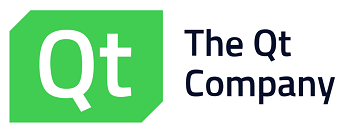
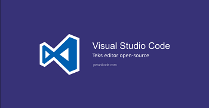
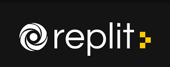

Podczaj pracy nad stroną jak i również w całym procesie nauki
programowania korzystam z różnych zródeł wiedzy między innymi:
1.
2.
3.
Jako środowisko programistyczne korzystam z darmowych kompilatorów wymienionych poniżej:
1.
2.
3. 